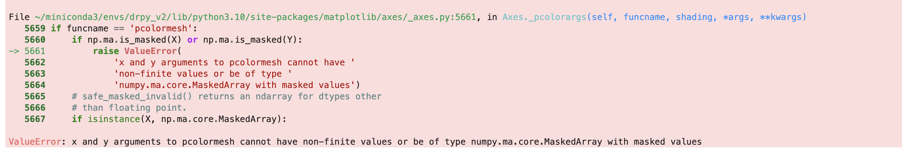

Advanced Plotting#
Now that you have the basics of the DRpy [if you are not, please see Getting Started on the left panel],
this page will guide you through using some of the advanced features of the drpy.graph.case_study method.
A lot of these methods will be ‘trial and error’, meaning try a new input to change how the plot looks, and see
if you like the change.
Moving the Cross-section#
Scan Adjustment (Cross-Track Index Choice)#

By default, drpy.graph.case_study will show you the nadir scan of GPM-DPR which is scan 24 of 49 total.
While this works well for the image above, alot of the times, the center of the swath is not where you want to
look. To change this, you will change the scan variable in drpy.graph.case_study like the following
c.plotter_along(scan=12)
Below I have a gif of using scan = 12 through scan = 37, which is the ‘inner swath’.

Note that depending on if the orbit is ‘descending’ or ‘ascending’ the scan number might increase to the left, or increase to the right.
Length Adjustment (Along Track Index Choice)#
In drpy.graph.case_study, you can change the location of the cross-section, which is written on the map as
the ‘Left’ and ‘Right’ marker (L and R). Depending on your feature you are looking at you will want to change these.
For example, lets look very close to the eye of this tropical cyclone.
c.plotter_along(start_index=130,end_index=160,scan=24)
{kind=link}
Now how about we zoom way out, say start at the first index (0 index) and go to the end (-1 index)
c.plotter_along(start_index=0,end_index=-1,scan=24)
If you use the above code, you will actually get an error. This happens because the Lat,Lon values are actually nans, and it screws up the distances on the x-axis of the cross-section.
{kind=link}
If you get an error that looks like the above picture, try increasing start_index and decreasing end_index
c.plotter_along(start_index=25,end_index=-25,scan=24)

Now you have the knowledge to go ahead and play around with the GPM-DPR data!
Cross-Track View#
So far I have been showing you the along-track view from GPM-DPR. This is the direction the radar itself is traveling in orbit. There are instances when the along-track dimension doesnt show the best perspective of the precipitation, so it is good to be able to look at the storm in the cross-track dimension. To do this, we just change the c.plotter_along to c.plotter_cross. For this method, since we are confined to a maximum of 49 scans (the radar hardware here), you only choose which along-track index you want to plot. Here is an example of the same storm we have been looking at.
c.plotter_cross(along_track_index=144)
{kind=link}
Adjusting the Cross-section#
While the default parameters for the cross-sections work for a number of meteorological examples, sometimes you want to ajust the height of the image (y-axis limit). To adjust any parameter, we will use the params_new dictionary. While I show the following examples with the c.plotter_along, the same apply to the c.plotter_cross
Y limit#
Let’s start with making the y-axis go through 15 km instead of 10, you would do the following:
c.plotter_along(start_index=25,end_index=-25,scan=24,params_new={'y_max':15})
{kind=link}
Color limit#
Occasionally, we can see values of reflectivity that are lower than the default color limits (e.g., snow).
You can adjust these by sending in 'z_vmin' for the lower color bound and 'z_vmax' for the upper bound.
c.plotter_along(start_index=25,end_index=-25,scan=24,params_new={'y_max':15,'z_vmin':0,'z_vmax':30})

You can do the same to the DFR, by sending in 'dfr_vmin' and 'dfr_vmax'
c.plotter_along(start_index=25,end_index=-25,scan=24,params_new={'y_max':15,'z_vmin':0,'z_vmax':30,'dfr_vmin':-1,'dfr_vmax':5})
{kind=link}
For this example, I hope you can see that the default color limit is probably better.
Different Variables#
So far we have been looking at the ‘raw’ or ‘measured’ reflectivity at Ku- and Ka- band, as well as the Dual-Frequency Ratio (which is the difference between Ku and Ka). But there is a ‘corrected’ product which attempts to correct for attenuation. To change the variables that are plotted on the cross-sections we will use the params_new dictionary again.
To control this, you will use the 'xsections' key word. This keyword is a list of length 3, which holds
an encoded value to tell DRpy which data to plot. The raw fields are coded by even numbers: [0,2,4].
c.plotter_along(start_index=25,end_index=-25,scan=24,params_new={'xsections':[0,2,4]})
(this is the same as the default)

Now let’s plot the corrected data, which uses the odd numbers: [1,3,5]
c.plotter_along(start_index=25,end_index=-25,scan=24,params_new={'xsections':[1,3,5]})
{kind=link}
!! NOTE NOTE NOTE !! The KaPR_c is the Ka-band reflectivity CALCULATED from the retrieved drop-size distribution. NOT the attenuation corrected Ka-band. This is often times why the DFR looks odd. This is not my doing, this is what the 2A.DPR files provide.
Speaking of the retrieved drop-size distribution you can plot the retrieved rain rate! (which is nunber 8).
c.plotter_along(start_index=25,end_index=-25,scan=24,params_new={'xsections':[1,3,8]})

An Alternate Snowfall Retrieval#
Background#
The GPM-DPR default retrieval (the one provided in the 2A.DPR files) for snowfall have some deficiencies (Casella et al. 2017 ; Skofronick-Jackson et al. 2019). During my time at graduate school, we (my advisers and I) looked into why the algorithm might be deficient and found that ultimately the assumed emperical relationship between precipitation rate (R) and mass weighted mean diameter (Dm) doesnt apply well to snow (Chase et al. 2020).
As a potential remedy, we looked into how machine learning could help retrieve snowfall with GPM-DPR. What I was able to show is that a neural network trained using the state-of-the-art snowfall scattering models (e.g., discrete dipole approximation) and measured particle size distributions produced a skillful retrieval, beating an approximation of the 2A.DPR retrieval (Chase et al. 2021). We have then gone on to compare our new neural network retrieval to CloudSat’s snowfall retrieval (2C-SNOWPROFILE) on a coincident dataset of colocations between GPM-DPR and CloudSat. In this paper (Chase et al. 2022), we show that our neural network retrieval just above the melting layer best matches the 2A.DPR rainfall rate retrieval just below the melting layer. This is important because if mass flux is conserved, which can be loosely assumed (Heymsfield et al. 2018; Mroz et al. 2020), then there is confidence in our snowfall algorithm despite having completely different retrievals (i.e., different assumptions)!
Rather than letting this retrieval sit in academia purgatory, I have implemented a way to run it within the DRpy.
Running Chase et al. (2021)#
The retrieval takes as inputs the Ku-band reflectivity, the dual-frequency ratio (Ku - Ka) and the temperature. All of these
variables are available in the 2A.DPR files, and all we need to do is use the xsections key in the params dictionary again.
One note though, you will need to install tensorflow (the CPU version is fine; conda install -c conda-forge tensorflow).
Let’s look at a scan that happened near the coast of Greenland! You do have to point the code to where the github repo is!
c = drpy.graph.case_study(filename='2A.GPM.DPR.V9-20211125.20220305-S092806-E110038.045545.V07A.HDF5',center_lat=center_lat,center_lon=center_lon,path_to_models='/Path/to/Your/DRpy/drpy/models/')
c.plotter_along(start_index=25,end_index=-25,scan=24,params_new={'y_max':5,'z_vmin':0,'z_vmax':35})
{kind=link}
This example is an interesting snowfall sample with a clear fall streak from 75 to 150 km along track (the large Z at Ku and large DFR).
To run the Chase et al. (2021) retrieval, all we need to do is provide an 9 (Dm liquid retrieval), 10 (Dm solid retrieval) or 11 (R) to the xsections param.
c.plotter_along(start_index=25,end_index=-25,scan=24,params_new={'y_max':5,'z_vmin':0,'z_vmax':35,'dm_vmax':2,'r_vmin':-0.5,'r_vmax':1,'xsections':[0,2,11]})
{kind=link}
For completeness, here is a gif comparing the Chase et al. (2021) retrieval to the 2A.DPR retrieval.

That’s it! Please know that this retrieval does not include rimed particles in its training data. Thus, we are unsure of the performance of the retrieval in convection.
We have also evaluated this NN retrieval on new in-situ measurments during IMPACTS, which shows that the NN retrieval is likely low biased. Check out my friends paper that shows this potenital low bias here: Finlon et al. 2022